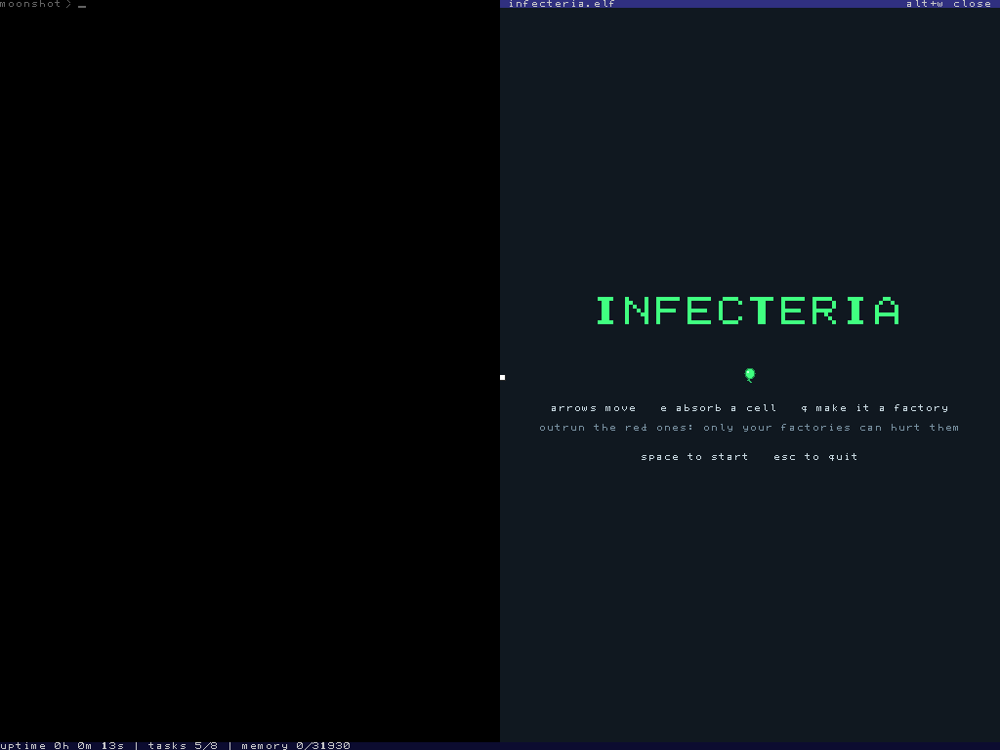

gnista
gnista is a game engine built from scratch in c0, running as a windowed ring-3 program on moonshot. the engine and moonshot are grown together. every real limitation the engine hits becomes a fix in the kernel or the compiler. infecteria is the game built on it.
entities
an entity is a layout with a position, a size, a velocity, a kind and a
few fields the game uses as it likes. entities live in a pool allocated once at
startup. their slots are reused. a wall is an ordinary entity that never moves,
so one collision routine and one drawing routine cover everything.
drawing
nothing in gnista draws straight to the window. every frame is drawn into a buffer
of its own and handed over in one present call, so a task switch can
never show half a frame. the buffer is sized for the largest window the machine can
hand out, so the game carries on when its window is resized. there are rectangles,
circles, text in the kernel's font and a camera that follows the player.
movement is a fixed step per frame, so a busy system slows a game down instead of making it skip. animation runs on real time, so a sprite cycles its frames at the right rate whatever the scheduler is doing.
sprites
sprites are loaded at run time from the files pensel saves, so art drawn on the machine shows up in a game with no rebuild. a sprite file can hold several frames. an animation clip is a run of them. a game carries fallback art for when nothing has been drawn yet.
scenes
a scene is a plain function that runs its own loop for as long as it is on screen and returns the scene to run next, or 0 to end the game.

3D, djup
djup draws meshes of coloured triangles through an orbit camera, with flat
shading from one light and a depth buffer, in whole numbers only, 16.16 fixed
point. faces turned away from the camera are left out. it can also say which
face is under each pixel, which is how
form picks a face with a click.
a mesh is a .form file, which form makes.
offset field
0 magic "form" and four zero bytes
8 version 1
16 vertex count v
24 face count f
32 v vertices x y z, fixed point, 24 bytes each
.. f faces three vertex numbers and a colour 0xRRGGBB, 32 bytes eacha face's corners go counterclockwise seen from outside, which is the side that is drawn.
infecteria
in infecteria you are a bacterium. you infect cells and absorb them or turn them
into factories, while antibacteria hunt you and heal the cells you left half
infected. only your factories can hurt them. you win by taking every cell. a file
called infecteria.seed holding a number fixes the world, so a layout
worth replaying can be kept.